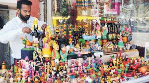

NON-TOXIC, UNIQUE,ECO-FRIENDLY,.
100% Organic, vivid variety of wooden toys.Made from soft ivory wood,and coated with lacquer(which is made up of vegetable color).
ABOUT US
The craft has diversified over time; in addition to the traditional ivory-wood, other woods—including rubber, sycamore, cedar, pine and teak—are now used as well.Manufacturing stages include procuring the wood, seasoning the wood, cutting the wood into the desired shapes, pruning and carving the toys, applying the colours and finally polishing the finished product. Vegetable dyes are used in the colouring process to ensure that the toys and dolls are safe for use by children.As of Oct 2011, Channapatna had a population of 71,902,in which 254 in home manufacturing units and 50 in small factories, were engaged in the making of these toys. The Karnataka Handicrafts Development Corporation (KHDC) provides assistance with marketing efforts. The oldest and most popular manufacturing unit Bharath art and crafts help develop innovative products.
VARIETIES
PAIR OF DOLLS
This is a pair of wooden dolls,male and female.we have many other varieties.
RAINBOW CALCULATION COUNTING TOY
This is a simple way to teach simple calculation for the childrens by counting the rings.
SET OF ANIMALS
This is a set of wodden animals there are in variety such as wild and domestic animals .
KITCHEN SET
This is a kitchen set which contains all kitchen items such as spoons mugs etc .
SET OF TOYS
This is a set of all vehicals and toys such as,dolls,jeep,cars,pulling toys etc
SET OF CUBES
This image describe the set of cubes which are available in varitey of sizes.
OUR SERVICE

GOOD QUALITY
We deliver the best product with A1 quality of wood .

Fast
We deliver your orders as fast as possible, delivery procedure begins as soon as orders is placed.

Satisfying
We guarantee 100% customer satisfaction. We do our best to make your purchase experience smooth. But if we mess up somehow you will get compensated for every inconvenience.
BENEFITS
There are many reasons wooden toys are better—not only for your child, but for the environment as well. They’re more durable (yielding less waste than their plastic counterparts), biodegradable and may even be made with sustainable wood. Good quality, eco-friendly wooden toys also don’t contain PVC, phthalates, or similar chemicals used in plastic toys. Be aware, however, of cheap, low-quality wood. Some are made from plywood that’s full of toxic glues and leach formaldehyde. Lack of quality control on these cheaper materials means there’s a high probability that paints tainted with lead were used, as well.